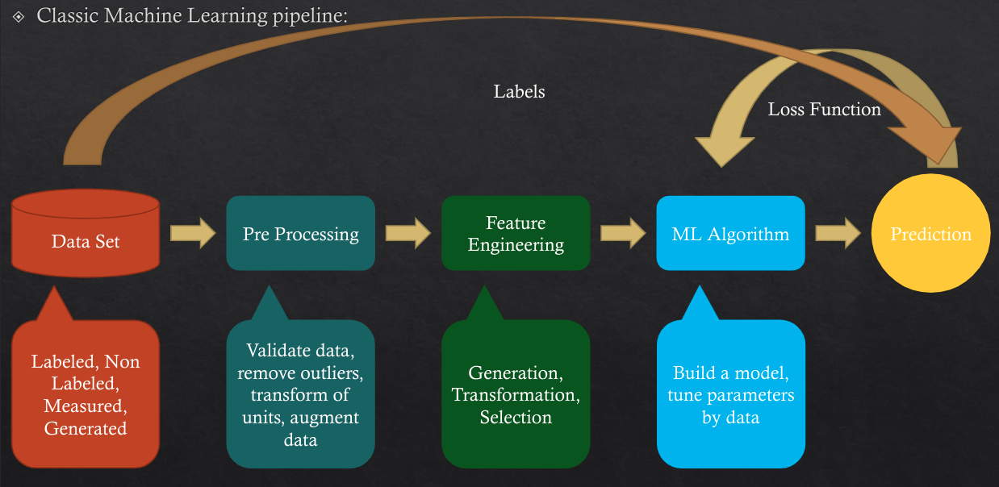
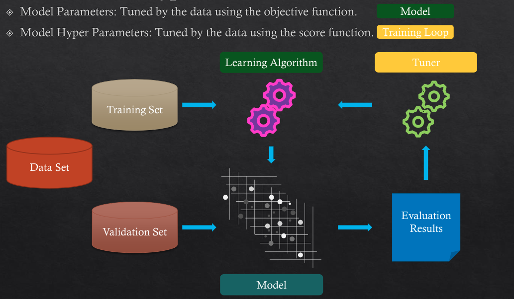
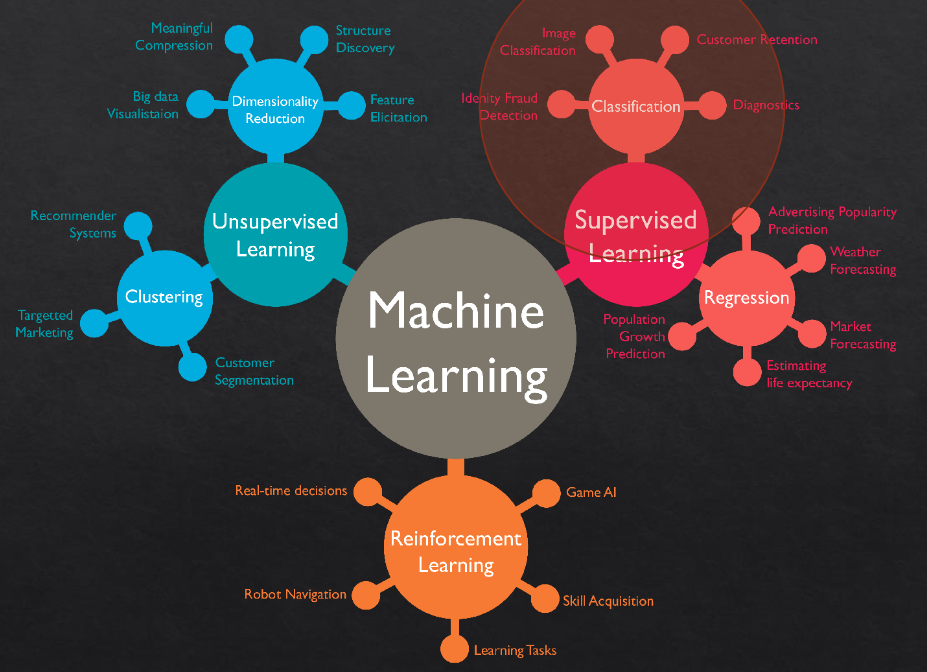

skip connections#
Skip connections, also known as shortcut connections or residual connections, are a crucial concept in modern deep learning architectures. They were popularized by the ResNet (Residual Networks) architecture, which significantly improved the training of deep neural networks.
Overview#
In traditional neural networks, each layer feeds its output to the next layer. This sequential structure can lead to problems, especially in very deep networks, such as:
Vanishing/Exploding Gradients: Gradients can become very small or very large, making training difficult.
Degradation Problem: As the network depth increases, accuracy can saturate and then degrade.
Skip connections address these issues by allowing the network to skip one or more layers and feed the input directly to a subsequent layer. This can be represented mathematically as:
Here, ( \mathcal{F}(x, {W_i}) ) represents the transformation function (e.g., a few convolutional layers) applied to the input ( x ), and the addition of ( x ) ensures that the original input is also part of the output. This simple addition helps in maintaining the flow of gradients and enables the network to learn more effectively.
Benefits#
Improved Gradient Flow: By providing a direct path for gradients to flow back, skip connections help mitigate the vanishing gradient problem.
Ease of Training: Networks with skip connections tend to be easier to train, even when they are very deep.
Better Accuracy: Empirical results show that networks with skip connections, such as ResNet, achieve higher accuracy compared to their plain counterparts.
Real-World Examples#
1. ResNet#
The most famous example of skip connections is the ResNet architecture. In a basic ResNet block, the input is passed through a series of convolutional layers and then added to the original input before applying the activation function. This can be visualized as:
Input -> [Conv -> BatchNorm -> ReLU -> Conv -> BatchNorm] + Input -> ReLU -> Output
2. U-Net for Image Segmentation#
U-Net is a popular architecture for image segmentation that uses skip connections to combine low-level features (from early layers) with high-level features (from later layers). This helps in preserving spatial information and improving segmentation accuracy.
conceptual example#
import torch
import torch.nn as nn
class BasicBlock(nn.Module):
def __init__(self, in_channels, out_channels):
super(BasicBlock, self).__init__()
self.conv1 = nn.Conv2d(in_channels, out_channels, kernel_size=3, padding=1)
self.bn1 = nn.BatchNorm2d(out_channels)
self.relu = nn.ReLU(inplace=True)
self.conv2 = nn.Conv2d(out_channels, out_channels, kernel_size=3, padding=1)
self.bn2 = nn.BatchNorm2d(out_channels)
def forward(self, x):
identity = x
out = self.conv1(x)
out = self.bn1(out)
out = self.relu(out)
out = self.conv2(out)
out = self.bn2(out)
out += identity ## !!!!!!!!!!!
out = self.relu(out)
return out
This code defines a simple residual block with skip connections.
Intuition#
In general, there are two fundamental ways that one could use skip connections through different non-sequential layers:
(a) addition as in residual architectures,#

there is some information that was captured in the initial layers and we would like to allow the later layers to also learn from them
If we had not used the skip connection that information would have turned too abstract
(b) concatenation as in densely connected architectures.#
there is low-level information shared between the input and output, and it would be desirable to pass this information directly across the net.

This leads to
a) an enormous amount of feature channels on the last layers of the network,
b) to more compact models, and
c) extreme feature reusability.

Short skip connections are used along with consecutive convolutional layers that do not change the input dimension (see Res-Net), while long skip connections usually exist in encoder-decoder architectures
Long skip connections often exist in architectures that are symmetrical, where the spatial dimensionality is reduced in the encoder part and is gradually increased in the decoder part
By introducing skip connections in the encoder-decoded architecture, fine-grained details can be recovered in the prediction
symmetrical long skip connections work incredibly effectively in dense prediction tasks